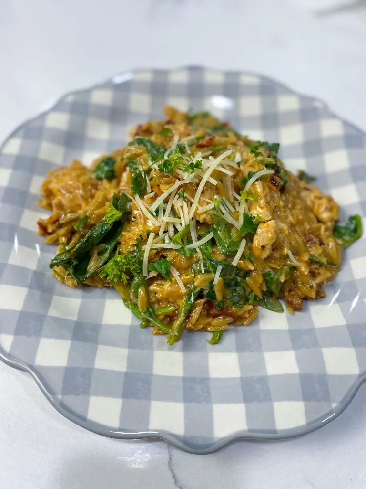

Home
Cajun Chicken Orzo

Description
I just tried this dish yesterday and it was a family pleaser. The ingredients complimented
each other well. This is a deliciously savory dish bursting with flavor.
Ingredients
- 1 tbsp butter
- 1 tbsp olive oil
- 1 yellow onion, diced
- 1 lb chicken breast, cubed
- 1 tbsp Cajun seasoning
- 1 tbsp tomato paste
- 1/4 cup sun dried tomatoes
- 1 tbsp minced garlic
- 1 cup orzo
- 1 1/4 cup chicken broth
- 2 cups fresh spinach, chopped
- 1/4 cup Parmesan cheese
- 1/4 cup heavy cream
Steps
- To a large skillet over medium heat, add the butter and olive oil. Once the butter has melted, add in the onion and chicken. Season the chicken with a dash of salt and the Cajun seasoning. Cook for about three minutes. The chicken does not need to be completely cooked throughout this point.
- Add in the tomato paste, sun-dried tomatoes, and minced garlic. Stir and let cook together for 1 minute. Add in the orzo and stir well. Stir in the broth and bring to a simmer.
- Simmer, covered, for about 15 minutes, stirring occasionally. If the liquid gets too low, you can add in 1/4 cup more broth at a time.
- Once the orzo is tender, add in the spinach, Parmesan, and heavy cream. Stir and let cook for two minutes to melt the cheese and wilt the spinach. Serve and enjoy!